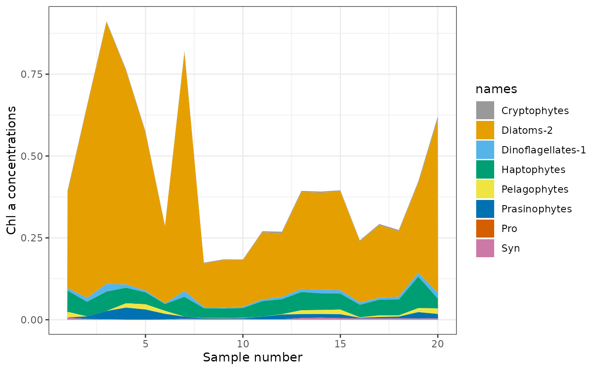

Perform simulated annealing algorithm for S and F matrices
Source:R/Prochloro_Sim_Anneal.R, R/simulated_annealing_prochloro.R
simulated_annealing_Prochloro.RdPerform simulated annealing algorithm for S and F matrices
Perform simulated annealing algorithm for samples with divinyl chlorophyll and prochlorococcus. Divinyl chlorophyll must be the final column of both S and F matrices, with chlorophyll a the 2nd to last column. See how the example Sp and Fp matrices are organised.
Usage
simulated_annealing_Prochloro(
S,
Fmat = NULL,
user_defined_min_max = NULL,
do_matrix_checks = TRUE,
niter = 500,
step = 0.009,
weight.upper.bound = 30,
verbose = TRUE
)
simulated_annealing_Prochloro(
S,
Fmat = NULL,
user_defined_min_max = NULL,
do_matrix_checks = TRUE,
niter = 500,
step = 0.009,
weight.upper.bound = 30,
verbose = TRUE
)Arguments
- S
Sample data matrix – a matrix of pigment samples
- Fmat
Pigment to Chl a matrix
- user_defined_min_max
data frame with some format as min_max built-in data
- do_matrix_checks
This should only be set to TRUE when using the default values. This will remove pigment columns that have column sums of 0. Set to FALSE if using customised names for pigments and phytoplankton groups
- niter
Number of iterations (default is 500)
- step
Step ratio used (default is 0.009)
- weight.upper.bound
Upper limit of the weights applied (default value is 30).
- verbose
Logical value. Output error and temperature at each iteration. Default value of TRUE
Value
A list containing
Fmat matrix
RMSE (Root Mean Square Error)
condition number
Class abundances
Figure (plot of results)
MAE (Mean Absolute Error)
Error
A list containing
Fmat matrix
RMSE (Root Mean Square Error)
condition number
Class abundances
Figure (plot of results)
MAE (Mean Absolute Error)
Error
Examples
# Using the built-in matrices Sp and Fp
set.seed(5326)
sa.example <- simulated_annealing_Prochloro(Sp, Fp, niter = 5)
#>
#> Condition number = 9290
#>
#> Current error: 0.0076
#> Neighbour's error: 0.0076
#> Temperature (%): 99.1
#>
#> Current error: 0.0076
#> Neighbour's error: 0.008
#> Temperature (%): 98.21
#>
#> Current error: 0.0076
#> Neighbour's error: 0.0081
#> Temperature (%): 97.32
#>
#> Current error: 0.0076
#> Neighbour's error: 0.0079
#> Temperature (%): 96.45
#>
#> Current error: 0.0076
#> Neighbour's error: 0.0076
#> Temperature (%): 95.58
#>
sa.example$Figure

# Using the built-in matrices Sp and Fp.
set.seed(5326)
sa.example <- simulated_annealing_Prochloro(Sp, Fp, niter = 1)
#>
#> Condition number = 9290
#>
#> Current error: 0.0076
#> Neighbour's error: 0.0076
#> Temperature (%): 99.1
#>
sa.example$Figure
 # To use with non-defauæy values, see the 'simulated_annealing' example-
# To use with non-defauæy values, see the 'simulated_annealing' example-